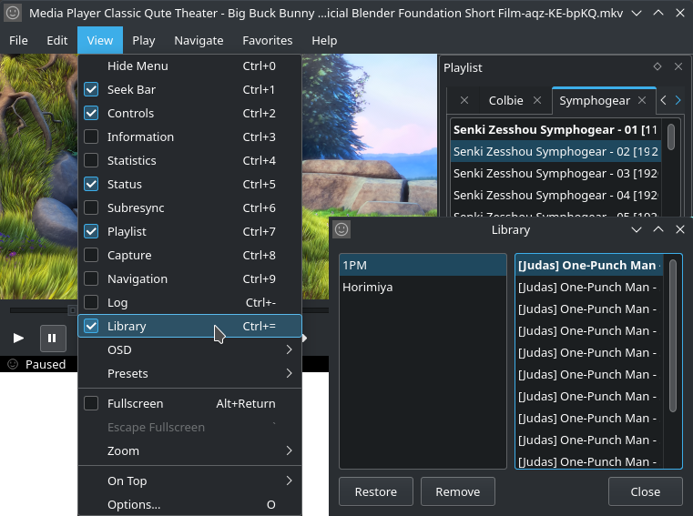
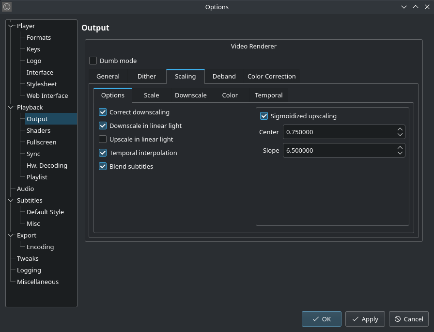

Mpc-Qt faithfully reproduces the interface of Mpc-Hc, with some minor additions as complimentary features were added.
Quick Queue
Plan your watching session by queuing tracks from any playlist, in the same manner of xmms/qmmp.
Playlist searching
Find the exact track out of a longer playlist.

Playlist library
When playlists are deleted, they aren't gone forever. Restore old playlists from backup, or finally send them into the nether if you really don't want them.
Subtitle copying
Copy displayed subtitles to the clipboard so you can study them later.

Robust options dialog
Utilize mpv's scalars and color correction options, and change other options. Cloned options are laid out in the same manner as in Mpc-Hc.